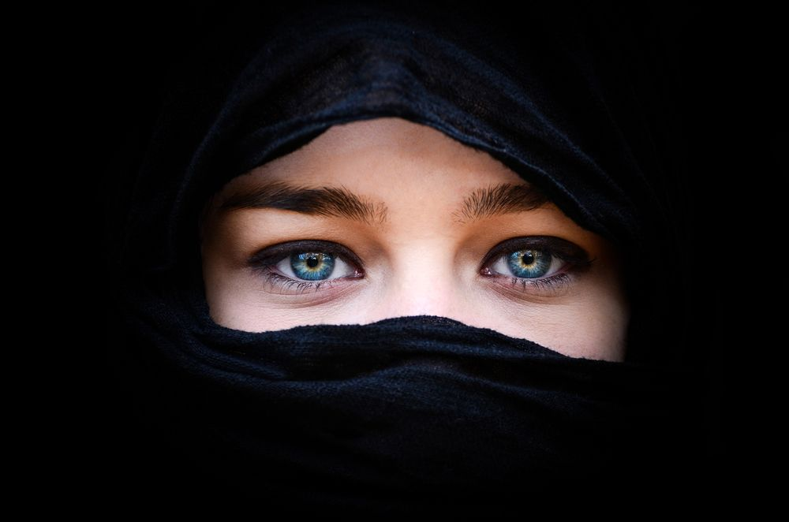

Women's Rights
Women in Afghanistan have had a long history of oppression. Even today, women remain just as trapped in strict gender roles as they did decades ago.

Religous Freedom
Afghanistan is always thought of as an Islamic State, however, there are still those who practice other religions Afghanistan.

Freedom of Press
One of the most dangerous jobs in Afghanistan is reporting. Many risk their lives daily attempting to show the world the truth behind warfare.

Test Your Knowledge
Click the button below to take a quick quiz about Social justice in Afghanistan